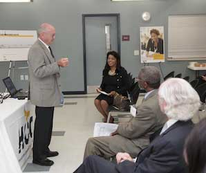
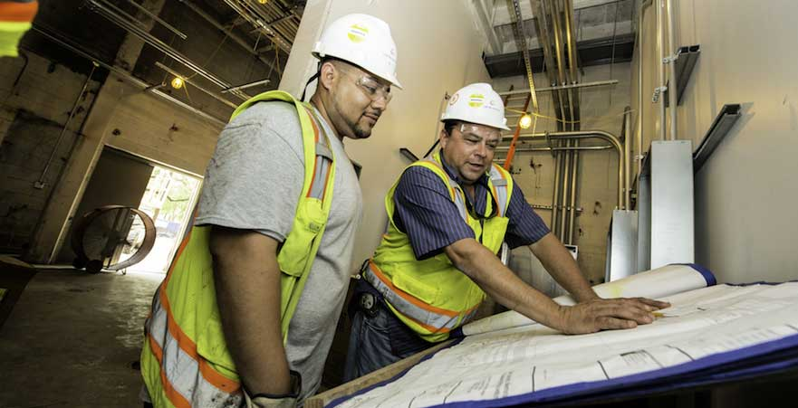
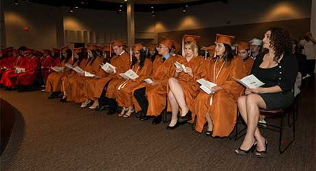
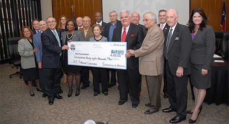
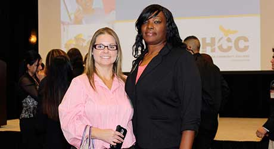
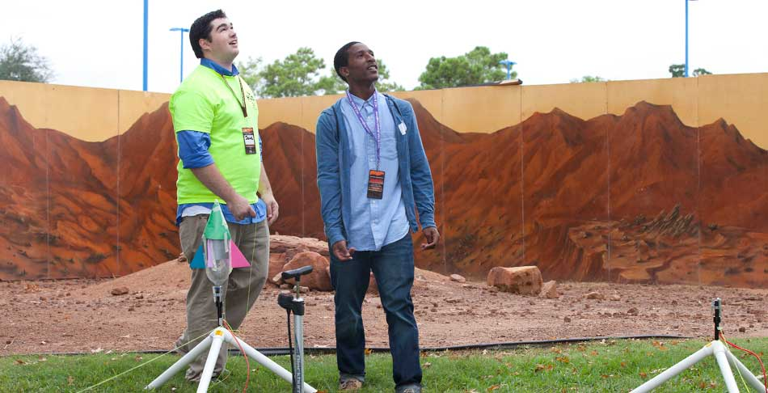
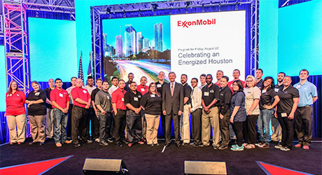
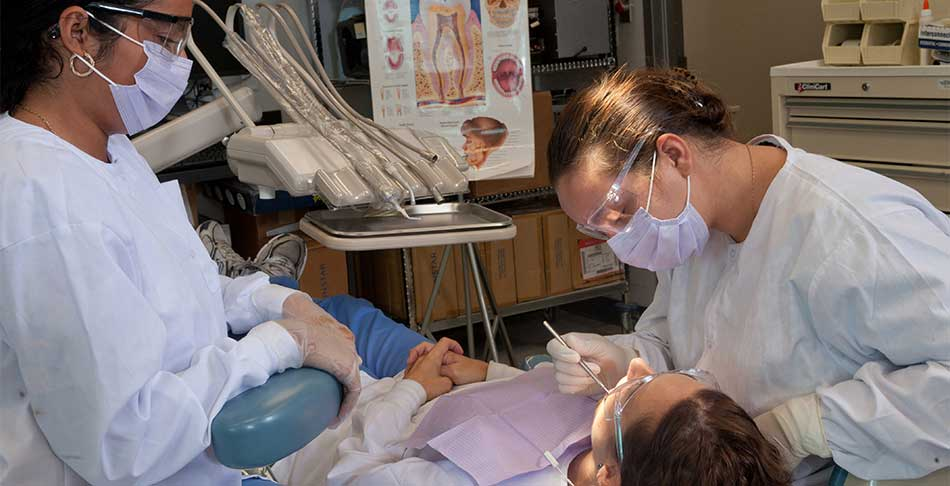

For the first six months of my tenure here at Houston Community College, much time has been spent in exploration. With six colleges, nearly 70,000 students and 3.4 million square feet of space, there are no limits to the opportunities that lie ahead.
Each conversation brings a unique perspective. From all of these ideas, HCC is moving to develop and strengthen innovative partnerships with business, industry, the community, and other educational institutions. We are taking action on projects and programs that better position HCC to meet the workforce demands of tomorrow. The results are producing additional pathways for student success.
As HCC positions itself to become a global leader in workforce training and education in the 21st Century, the transformation will continue. I hope you will consider reaching out to HCC to partner in the opportunities we can explore together.
Let me know how Houston Community College can be of assistance.
1.2.3.
Houston Community College is proud to be ranked by Community College Week as one of the Top 100 community colleges in the country. Of the 1,200 two-year institutions studied, HCC is ranked:
#1 in granting Associate Degrees in Liberal Arts
#2 in granting Associate Degrees to African Americans
#3 in granting Associate Degrees in All Disciplines
Community
As one of the largest community colleges in the nation and the number one developer of workforce-ready candidates, HCC is focused on student success and community partnerships. This report features the latest programs, initiatives and accomplishments that make Houston Community College a leader in higher education. HCC is and will continue to be the place to start here, learn here, train here, improve here and go anywhere.
HCC participated in the Houston Pride Parade
June 28, 2014

HCC conducted several town hall meetings during the month of August to discuss capital improvements related to new facilities that are part of HCC’s $425 million Groundbreaker Bond Project.
August, 2014
HCC Northeast, in partnership with METRO celebrated the opening of METRO's new Red/North Line light rail with a ribbon-cutting ceremony at the Northline Campus.
August 13, 2014
President Irene Porcarello and Southeast College hosted a meet and greet for Chancellor Cesar Maldonado at the Eastside Learning Hub.
August 20, 2014
HCC Central celebrated the San Jacinto Building’s 100th birthday.
September 18, 2014
HCC Coleman visited Roderick Page Elementary to give students a look at what they could be when they grow up.
October 29, 2014

Greater Houston Partnership: Upskill Houston
As a vital workforce education resource for the region, HCC welcomes the opportunity to work with local industry and community leaders to define the job market and education needs of the Greater Houston Area.
Continue reading...
Greater Houston Partnership: Upskill Houston
Houston Community College is a “center of excellence,” training workforce-ready candidates to earn the credentials they need to fill jobs that are readily available. This is why HCC supports the Greater Houston Partnership (GHP) initiative UpSkill Houston, an industry-led action plan that addresses the growing need for skilled workers in Houston and training them for tomorrow’s jobs.
A key characteristic of UpSkill Houston is connecting leaders from industry, education and social service organizations to address workforce challenges, to build a quality workforce that meets employer’s needs.
As a vital workforce education resource for the region, HCC welcomes the opportunity to work with local industry and community leaders to define the job market and education needs of the Greater Houston Area.
“HCC has been creating dynamic platforms for workforce development for more than 40 years, while at the same time creating pathways for our students to transfer to higher education,” said Dr. Cesar Maldonado, chancellor at HCC. “Through this collaborative partnership with business, industry and education, HCC will do its part to increase certification and degree completion rates and accelerate education development as much as possible.”
HCC offers short-term certificate programs and associate degrees to support the demands of the major industry sectors of the region and Houston’s growing economy. From oil and gas to manufacturing, healthcare, construction, maritime and petrochemical, HCC’s established programs, convenient locations and affordability provide easy access to in-demand training for skilled workers.
The goals of UpSkill Houston include raising awareness among potential workers and improving the quality of applicants through skills training and education. The initiative focuses on middle-skills occupations that require employee candidates to have more than a high school diploma, but do not require a four-year degree.
‘Rockets Science’ Program to launch in early 2015
Hundreds of middle school students will get the chance to become real rocket scientists through a partnership with Houston Community College and the Houston Rockets.
Continue reading...
‘Rockets Science’ Program to launch in early 2015
Hundreds of middle school students will get the chance to become real rocket scientists through a partnership with Houston Community College and the Houston Rockets. The “Rockets Science” program will allow students to build their own rockets then launch them into “outer space” from an HCC location.
Up to 40 students from 10 Houston area middle schools will be chosen.
NASA is providing the teaching materials and Space Center Houston is involved in hosting an event for participants.
In addition to the 40 students, any student of any age may take advantage of the curriculum that will be in the Rockets-hosted portal that will have the instructional information for anyone who may want to build a rocket at home.
This will be a four-week course to begin in February 2015 and will include a tour of Space Center Houston and launch day at HCC.
Final details are being worked out, but this is a great opportunity for middle school students within our service area and beyond.
The Houston Rockets are hopeful this partnership is something that can be shared as a best practice within the NBA.
In addition, the Houston Rockets are creating six in-game STEM (science, technology, engineering and math) related videos to be displayed during home games, using players, coaches and office staff to give game attendees an opportunity to learn how much fun a career in STEM can be.
Videos will include the science behind a human jump – both vertical and broad jump, muscles responsible, techniques, an analysis of hang time, and a second one that will calculate the amount of time a ball is in the shooter’s hand, mapping the angles of the catch and shoot, and an in-depth look at the math, geometry and timing behind the shot. Other topics will include statistics of basketball, the nutrition involved to support an NBA player and others.
New Scholarships
HCC is making three new scholarships available to students for the Spring 2015 semester.
Continue reading...
New Scholarships
Making good grades at Houston Community College can really pay off. HCC is making three new scholarships available to students for the Spring 2015 semester.
In order to be considered, you must fill out the Free Application for Federal Student Aid form on the www.hccs.edu homepage.
Once the application is completed students are eligible for the following awards:
Honors College Scholarships
Students must participate in the Honors College to receive the funds that will cover tuition and fees not already covered by another source of financial aid.
Chancellor's Scholarships
Designed to help encourage very high performing students to finish their degree at HCC, $300 will be awarded per semester to students with a 4.0 cumulative GPA who have 30 or more semester credit hours recorded at HCC. If the student receives other aid, he/she must also maintain satisfactory academic progress. The student can retain this scholarship as long as the cumulative GPA stays at 4.0.
Impact Scholarships
This scholarship targets students with an expected family contribution per FAFSA of $2,500 to $5,100, semester enrollment of 9 semester credit hours or more and who are either new students or have a cumulative GPA or greater than 2.9. Students will retain the scholarship as long as they meet all three criteria.
Find the Free Application for Federal Student Aid (FAFSA) on the HCC homepage at www.hccs.edu.
Faculty and Staff
New Mathways: HCC aims to improve student success in math
The HCC New Mathways Program is being launched to allow students to get on the road to success in college math much more quickly.
Continue reading...
New Mathways: HCC aims to improve student success in math
The HCC New Mathways Program is being launched to allow students to get on the road to success in college math much more quickly.
The HCC New Mathways Program is being launched to allow students to get on the road to success in college math much more quickly. In the past, students may have been bogged down with several courses in developmental math that didn’t count for college credit, and spent additional time and money, now many students will be able to transition with only one pre-requisite math course aligned with their field of study.
The program has been a collaborative effort between the HCC Mathematics Program and The Charles A. Dana Center at UT Austin. It is based on four fundamental principles:
1. Multiple pathways with challenging mathematics content geared to a student’s specific field of study.
2. Accelerating students more quickly to a college-level math course.
3. Specific and relevant strategies to help students develop skills as learners.
4. Curriculum design based on proven practices in teaching and learning.
Student success and accelerating a student’s progress through a college education: that’s what this New Mathways Program is all about,” said Dr. Stephen Levey, Associate Vice Chancellor for Academic Instruction at HCC. “HCC is committed to educating students who will graduate prepared for their chosen careers. By following a Mathway more closely aligned with their field of study, each student will be completing courses that tie more directly to what will be needed in their future careers.”
For more information about Houston Community College New Mathways program go to www.hccs.edu/mathways.

Futures Academy
The goal of the Futures Academy is to provide access for college-ready high school students to career pathways leading to in-demand employment opportunities with good wages.
Continue reading...
Futures Academy
The goal of the Futures Academy is to provide access for college-ready high school students to career pathways leading to in-demand employment opportunities with good wages.
There’s growing interest in expanding the Futures Academy at Houston Community College. The program is a dual-credit partnership between HCC and the Houston Independent School District (HISD) that allows high school students to take HCC classes and earn college credits while attending high school.
This summer, the Futures Academy graduated its first cohort of students from five Houston area high schools. The 60 students received their Associates in Applied Sciences degrees from HCC, months after they received their high school diplomas.
The goal of the Futures Academy is to provide access for college-ready high school students to career pathways leading to in-demand employment opportunities with good wages. Many students represent first generation college students.
The Futures Academy students hail from Booker T. Washington, Furr, Kashmere, Scarborough, and Sterling. They received degrees in Manufacturing Engineering Technology, Engineering Technology-Renewable & Sustainable Energy, Process Technology, Network & Computer Systems Administration, and Logistics & Global Supply Chain Management.
Most Futures Academy students in the first graduating class entered the program with deficiencies in reading, writing and math skills. In addition to completing their high school and HCC requirements, students were provided tutoring support by both institutions to qualify and to be better prepared for the higher level coursework connected to their degree plan.
“Throughout this program I’ve learned that I’m able to accomplish things that I didn’t think I would be able to do,” said Jose Moreno, graduate of the Futures Academy program at Sterling High School. “I never gave up. I always pushed myself through to finish the task.”
Bedichek-Orman Auction raises funds for faculty at HCC
The theme was “A Journey to Outer Space,” and the mission was to raise money for professional development grants at Houston Community College.
Continue reading...
Bedichek-Orman Auction raises funds for faculty at HCC
The theme was “A Journey to Outer Space,” and the mission was to raise money for professional development grants at Houston Community College.
The 2014 Bedichek-Orman Faculty Development Auction and Dinner at the West Loop Auditorium brought in nearly $9,000. More than 140 faculty, staff, administrators and trustees raised the money through live and silent auctions while they enjoyed dinner, drinks and entertainment.
That included a well-received video greeting from Dr. Cesar Maldonado, HCC chancellor who, dressed as Captain Kirk from Star Trek, “beamed in” from another planet.
“We gathered together to raise money for a worthy goal and had a great time too,” said Dr. Alan Ainsworth, HCC faculty representative. “This year, Dr. Maldonado’s willingness to send us his special greetings sent us to the moon.”
The Bedichek-Orman Faculty Development Fund honors two respected professors, Wendell Bedichek and Helen Orman, and is used for professional development and Teaching Excellence Awards.
During the auction, Central College English professor Syble Davis, Central College Dance professor Julie Bata, and Northwest College History professor Christopher Patke were each awarded $500 for teaching excellence. For more information about the Bedichek-Orman Faculty Development fund go to the Bedichek-Orman Website.
Foundation
The Houston Community College Foundation has awarded thousands of scholarships to deserving HCC students. For the fall semester alone, nearly 550 students were given scholarships to help them continue on their path to the future. This was all made possible through the generosity of our expanding group of business and community donors who understand the need to support the developing workforce. The fundraising efforts continue to expand with the ultimate goal of building a scholarship endowment sufficient to award a scholarship to all HCC credit-hour students who qualify for assistance as they begin their college career.

Sembradores de Amistad
Members of the Sembradores de Amistad announced a permanently endowed scholarship for the benefit of Hispanic and low-income students pursuing an education in Science, Technology, Engineering and Math (STEM) at HCC. Since 2007, the Sembradores de Amistad has provided scholarship funds for HCC students, but this donation provides a gift that will live in perpetuity. Their $60,000 was matched with other funds, and an additional $9,000 was raised by community leaders to support the efforts of the group, resulting in a total endowed scholarship of $138,000.
Society of Petroleum Engineers
Members of the Board of the Society of Petroleum Engineers – Gulf Coast Region announced the gift of $100,000 in support of RigOne and Petroleum Engineering Technology programs at HCC Northeast College. In recent years the Society of Petroleum Engineers Gulf Coast Section has contributed to the Petroleum Engineering Technology Scholarship, the Chancellor’s Symposium and the HCC Northeast STEM Fair. This gift is the largest and most significant donation in support of HCC programs and will be the founding gift for the RigOne Simulation Laboratory. Purdue said that $65,000 was being delivered to support RigOne; $25,000 was going to scholarships and an additional $10,000 was being added to their earlier gift of $20,000 to support the Petroleum Technology programs at HCC Northeast.
JP Morgan Chase
JP Morgan Chase announced a grant for $100,000 to fund the expansion of the Capital IDEA program at Northeast College. The JP Morgan Chase grant will allow students who wish to obtain an Associates Degree or college level certificate in a STEM-related career the ability to enroll at no cost for tuition, fees and books, with no loans or paybacks necessary. Upon completion, an average worker can move quickly into a job that pays an average or $17 and hour. The Capital IDEA program is ongoing at HCC Northeast, Southwest and Southeast colleges.

HCC Foundation Scholarship Luncheon
The HCC Foundation hosted its annual Scholarship Luncheon honoring hundreds of HCC scholarship recipients. The program featured a student testimonial from Misty Smith, recipient of the Marjorie Goldberg Lott Accounting Scholarship. “I am now in a phase of life where I can recognize my goals, reach for them and work to earn my place, thanks to the HCC Foundation,” said Smith. The luncheon gave students an opportunity to meet with the donors of their scholarships and celebrate their generosity.
TWC Coordinating Board
The Texas Education Agency (TEA), Texas Higher Education Coordinating Board (THECB) and Texas Workforce Commission (TWC) awarded Houston Community College, Houston Independent School District and Alief Independent School District a $600,000 THECB Early College High School grant. The funding will help local education leaders plan and launch new opportunities for students to simultaneously earn a high school diploma and a post secondary credential that prepares them to enter high-skill, high-demand workforce fields.
Texas STEM Grant
Texas Higher Education Coordinating Board (THECB) has awarded HCC the Texas-Science, Technology, Engineering and Mathematics (T-STEM) Challenge Scholarship Grant Program. The T-STEM grant assists to increase graduation rates in STEM and related degree and certificate programs. HCC was awarded 153 scholarships with a total of $402,630 for the academic year 2014-2016.
346
Number of Academic, Workforce and Continuing Education Program offered at
Houston Community College as of November 21, 2014
Grow
Houston Community College continues its commitment to growth and student success. The Board of Trustees approved all 14 bond projects in the HCC $425 million Groundbreaker Bond Program as promised to the voters and construction plans are being developed that will enhance all six HCC colleges.
The capital improvement project will add 1 million square feet to the already existing 3.4 million square feet of space across the entire district.
Bond projects currently underway include: improvements to the Alief Campus, West Houston Institute, adding new multi-use parking garages to the West Loop and Northline Campuses, creating new Workforce Buildings at Brays Oaks, Stafford, Eastside, Central South and North Forest Campuses, building a new Center for Entrepreneurship, Technology and Health (CETH) at the Missouri City Campus, creating a new STEM facility at the Felix Fraga Campus, a new site for Northeast College in Acres Homes, building renovations at HCC Central, and a new tower at Coleman College of Health Sciences.
"Our bond program aims to make a positive difference in the small business community, with 35 percent of overall construction work going to SBEs,” said Dr. Cesar Maldonado, chancellor. “Moreover, 85-90 percent of program funds will be spent at the sub-contractor level versus 10-15 percent at the CMAR level.”
To help meet that 35% goal, HCC and Jacobs Program Management hosted 3 small business enterprise networking events which allowed small business subcontractors to meet the CMARs in charge of construction projects.
West Loop Parking Garage
West Houston Institute
Stafford Workforce
South Campus Workforce
North Forest
Coleman Expansion
Create

Engineering a Partnership with UT-Tyler
HCC and the University of Texas at Tyler have partnered to create a four-year Engineering Degree Program at the Alief-Hayes Campus.
Continue reading...
Engineering a Partnership with UT-Tyler
HCC and the University of Texas at Tyler have partnered to create a four-year Engineering Degree Program at the Alief-Hayes Campus.
HCC and the University of Texas at Tyler have partnered to create a four-year Engineering Degree Program at the Alief-Hayes Campus.
Engineering students will complete their first two years at HCC and earn an Associate of Science in Engineering Science. If they maintain an overall GPA of 2.5 and no grade lower than a C, they are automatically admitted to the UT-Tyler baccalaureate program right on the same campus. This innovative partnership brings a savings of nearly 50% on tuition costs.
In January 2015, Texas lawmakers will consider a recommendation to allow HCC and other colleges around the state to expand programs that will meet the demand for skilled workers in nursing and STEM (Science, Technology, Engineering and Math).
Continue reading...
HCC pushes for Baccalaureate Degree Expansion
In January 2015, Texas lawmakers will consider a recommendation to allow HCC and other colleges around the state to expand programs that will meet the demand for skilled workers in nursing and STEM (Science, Technology, Engineering and Math).
Students who graduate from Houston Community College with an Associate Degree in Nursing are having a hard time finding employment in their chosen field of study because they don’t have a Bachelors of Science in Nursing. Hospitals will soon require 80% of bedside nurses to have a BSN to work in any Magnet Status hospital. With the steady growth of the Texas Medical Center, expansion is particularly critical in the field of nursing.
Veterans Affairs Resource Center
HCC provides servicemen and women and their families with a system to help them transition to civilian life and a positive educational experience.
Continue reading...
Veterans Affairs Resource Center
HCC provides servicemen and women and their families with a system to help them transition to civilian life and a positive educational experience.
Nearly 3,500 students from the Veteran community are enrolled at Houston Community College, a number that continues to increase each semester. HCC provides servicemen and women and their families with a system to help them transition to civilian life and a positive educational experience. This summer, HCC opened the fourth Veterans Affairs Resource Center at Central College. The remaining three VA Resource Centers are at the Alief-Hayes Campus, West Loop Campus and Eastside Campus. They serve as places for student veterans to study, interact with fellow students and receive counseling to help with family crises, readjustment issues, securing additional resources and much more.
58,430
Number of Semester Credit Hour Students for Fall 2014
Fuel
Global Energy Training Center
Houston Community College’s Global Energy Training Institute is specifically designed to address the critical shortage of personnel in energy and related industries.
Continue reading...
Global Energy Training Center
Houston Community College’s Global Energy Training Institute is specifically designed to address the critical shortage of personnel in energy and related industries.
As part of Houston Community College’s commitment to providing qualified, well-trained workers for the Greater Houston community, the Global Energy Training Institute (GETI) is specifically designed to address the critical shortage of personnel in energy and related industries.
GETI offers specialized certificates, Associate Degrees, duel credit and high-tech training in careers in oil and gas exploration and production, renewable and sustainable industries.
RigOne
The RigOne Drilling Rig Simulator will allow students to participate in pipe handling, rigging, load slinging and the use of hand and power tools, among other exercises.
Continue reading...
RigOne
The RigOne Drilling Rig Simulator will allow students to participate in pipe handling, rigging, load slinging and the use of hand and power tools, among other exercises.
As one of the many facets of HCC’s Global Energy Training Institute, the RigOne Drilling Rig Simulator will allow students to participate in pipe handling, rigging, load slinging and the use of hand and power tools, among other exercises. With these skills, students will be prepared to enter the energy industry as roustabouts.
Before taking any course work, students must attend a free information session to help determine if they will succeed in working on elevated platforms out in the elements all day. The introductory course provides an introduction to the equipment, systems, instrumentation, operations and various scientific principles of the oil and gas sector. Students learn a variety of petroleum technologies, with emphasis given to exploration and drilling, production, transportation, marketing and chemical processing industries.
During the introductory course, students are required to physically attend classes at the campus for four hours a week, with the remainder of the classes available online. The cost of the class, including all certifications, textbooks and testing is $660.
More than 100 people, many from out of state, have already taken the 64-hour introductory course and will be ready to climb on the RigOne platform when it is complete in mid-2015. To date, the program boasts a successful completion rate of about 85 percent.
The HCC Rig Safety and Skills Training Laboratory will be a two-level laboratory, built to full-scale and will allow students to participate in a variety of exercises.
Companies that worked with HCC to develop curriculum to support the RigOne Project and are already employing graduates include Atwood Oceanics Inc., Diamond Offshore Drilling, ENSCO plc, Halliburton Company, Noble Corporation, Pacific Drilling Co., Maersk Drilling, Hercules Offshore Drilling and Transocean Ltd. HCC receives requests routinely from these companies to send them additional graduates to support their needs.
Petroleum Engineering Technology
The Petroleum Engineering Technology program prepares students to work as Petroleum Engineering Technicians.
Continue reading...
Petroleum Engineering Technology
The Petroleum Engineering Technology program prepares students to work as Petroleum Engineering Technicians.
The Petroleum Engineering Technology program prepares students to work as Petroleum Engineering Technicians. The petroleum industry requires highly-skilled individuals for multiple field and office positions.
This challenging program is designed to train engineering technicians in all areas of the downstream and midstream petroleum industry. Students in the Petroleum Engineering Technology program complete core coursework in areas that include – but are not limited to – hydrocarbon safety, drilling, geology, oil exploration and production, and reservoir. In conjunction with these courses, students employ the latest computer software and take interdisciplinary courses giving an overall view of the oil business.
Ship
Texas A&M University at Galveston
HCC and Texas A&M University at Galveston have formalized an agreement to provide students with a pathway to a four-year degree and advanced training in the maritime logistics industry.
Continue reading...
Texas A&M University at Galveston
HCC and Texas A&M University at Galveston have formalized an agreement to provide students with a pathway to a four-year degree and advanced training in the maritime logistics industry.
Houston Community College and Texas A&M University at Galveston (TAMUG) have formalized an agreement to provide students with a pathway to a four-year degree and advanced training in the maritime logistics industry.
Students who complete the Associate of Applied Science degree in Maritime Logistics Program at HCC will have an opportunity to transfer with automatic admission to TAMUG. Careers in this field include: logistics manager, purchasing manager, supply chain specialist, or logistics administrator.
The Maritime Logistics program includes two opportunities to acquire credentials – the Certified Logistics Associate and the Certified Logistics Technician. Additionally, courses are included that provide students to prepare to acquire Occupation Safety & Health Administration certification. This training includes safety training for forklift, equipment handling and basic knowledge of the maritime industry as it interfaces with Logistics & Global Supply Chain Management.
Corrosion Technology
Once considered low-tech, corrosion technology is now high-tech with advanced systems for detecting, testing and prevent corrosion.
Continue reading...
Corrosion Technology
Once considered low-tech, corrosion technology is now high-tech with advanced systems for detecting, testing and prevent corrosion.
Exposed to the elements around the clock, maintenance of much of the equipment and technology related to the shipping industry falls into the hands of qualified experts in corrosion technology.
What was once considered low-tech is now high-tech with advanced systems for detecting, testing and preventing corrosion. The HCC Corrosion Technology program prepares students to carry out technician level work that involves data collection, installations and repairs.
Individuals working in corrosion technology can earn an average of $42,000 to $61,000 annually.
This career path offers two certificate programs that can be completed in two semesters: Atmospheric Corrosion and Cathodic Protection. Either certificate leads to an AAS degree in Corrosion Technology and NACE Certification.

CCPI
This summer, two HCC Southeast students were among the first in the Gulf Coast to be awarded the $1,000 CCPI scholarship that will be used to pay for tuition, fees and books.
Continue reading...
CCPI
This summer, two HCC Southeast students were among the first in the Gulf Coast to be awarded the $1,000 CCPI scholarship that will be used to pay for tuition, fees and books.
The booming oil and gas industry has opened a pipeline of numerous opportunities for skilled workers in various technical fields. Houston Community College, along with eight other community colleges across Texas and energy giant ExxonMobil have formed the Community College Petrochemical Initiative (CCPI) to support this growth. The goal of CCPI is to attract as many as 50,000 students and educators across the state over the next five years and fast track them through certification and degree programs in petrochemical industry. ExxonMobil has invested $1M to the program.
Build
Welding
The Houston Community College Bluebonnet Applied Technology Center prepares students to enter the workforce trained and certified in a variety of careers including: welding, electrical and Heating Ventilation and Air Conditioning (HVAC).
Continue reading...
Welding
The Houston Community College Bluebonnet Applied Technology Center prepares students to enter the workforce trained and certified in a variety of careers including: welding, electrical and Heating Ventilation and Air Conditioning (HVAC).
In a metropolitan area changing as quickly at Houston, HCC has the clear advantage of being in the center of the action. With construction at both international airports, $3 billion of construction occurring in downtown alone, and highways expanding to carry the increasing population, welding is among one of the most rapidly growing careers.
Employment of welders, cutters, solderers, and brazers is expected to grow 15 percent from now until to 2020 in construction, oil and gas and ship building.
The recently opened Houston Community College Bluebonnet Applied Technology Center and other HCC locations prepare students to enter the workforce trained and certified in a variety of careers including: welding, electrical and Heating Ventilation and Air Conditioning (HVAC).
The eight week Welding Certificate program teaches students the basic welding processes, including gas metal arc welding (GMAW), gas tungsten arc welding (GTAW), MIG (Metal Inert Gas), TIG (Tungsten Inert Gas), oxy-fuel welding (OFW) and cutting, shield metal arc welding (SMAW), and Pipe welding.
Houston Community College is creating new pathways to jobs to keep up with rapid growth of new development in Houston. Focused on offering education in shorter, more manageable time spans, HCC provides an education that leads to rapid certification and employment.
Continue reading...
Manufacturing Trades
Houston Community College is creating new pathways to jobs to keep up with rapid growth of new development in Houston. Focused on offering education in shorter, more manageable time spans, HCC provides an education that leads to rapid certification and employment.
The Alief Construction Technology Center at the Bissonnet campus offers students certification in heating, ventilation, air conditioning, industrial electricity, plumbing, carpentry and AutoCAD. This new center focuses on training students for “gold collar” careers, which are jobs in the manufacturing field.
According to the Bureau of Labor Statistics, employment outlooks from now until 2020 for HVAC, electrical and plumbing are growing faster than the average for most occupations due to construction demand, retirement of more experienced workers and stricter laws with environmental concern. HCC is the model of what it means to bridge the gap between the state and community colleges by providing a facility and programs that are adaptable to the schedules of today’s students.
Alief ISD worked with HCC to design a facility that would allow a portion of their 4,600 students to easily get an education that would allow them to make a meaningful wage and contribute back to the community. AISD officials believe so much in this partnership that they project in two to three years there may be a need for another facility.
Heal

Center for Healthcare Professionals
The Center for Healthcare Professionals offers continuing education opportunities for those who need to maintain existing licensure/certifications, obtain new skills and knowledge and prepare for advanced certification.
Continue reading...
Center for Healthcare Professionals
The Center for Healthcare Professionals offers continuing education opportunities for those who need to maintain existing licensure/certifications, obtain new skills and knowledge and prepare for advanced certification.
Healthcare professionals looking to better their careers can turn to The Center for Healthcare Professionals (CHP) at Coleman College.
A partnership between the Houston Community College’s Division of Extended Learning and the college credit healthcare programs at HCC Coleman, the CHP offers continuing education opportunities for those who need to maintain existing licensure/certifications, obtain new skills and knowledge and prepare for advanced certification.
The CHP works to ensure that all of its course offerings are approved for professional contact hour continuing education credit by recognized accrediting agencies whenever possible, and works with local healthcare related businesses and organizations to support the continuing learning needs of healthcare professionals in the Texas Medical Center and surrounding areas.
The CHP also manages both public and private grant-based healthcare training and education projects, and is available to co-provide with community partners, discipline specific continuing education contact hours for educational events.
In the HCC Medical Scribe program, students are trained as medical information managers who specialize in charting physician-patient encounters in real-time.
Continue reading...
Medical Scribe Program
In the HCC Medical Scribe program, students are trained as medical information managers who specialize in charting physician-patient encounters in real-time.
In these days of confidential patient information being protected, the role of a Medical Scribe is more important than ever. Students are trained as medical information managers who specialize in charting physician-patient encounters in real-time. In a professional role, medical scribes interact and collaborate with other members of the health care team, but serve as the right hand to the physician. Similar to the medical transcriptionist, the medical scribe provides another career pathway or stepping stone to the health care system.
The Medical Scribe Program at HCC Coleman College is approved by the American College of Medical Scribe Specialists (AMCSS). In six months, students will learn the fundamentals of the scribe field including medical terminology, anatomy & physiology, electronic health records, medical insurance, Health Insurance Portability and Accountability Act (HIPAA), as well as law & ethics for the health professions. Students are trained in both the classroom and in the clinical area to document the history, chief complaint, physical exam, assessments and procedures dictated by the provider during real-time charting.
The Office of Finance and Planning has worked diligently on preparing a budget for the 2014 – 2015 academic year that positions the college for both meaningful growth and success. As the door opens to 2015, HCC will begin formulating a 5-year strategic plan that will be supported by reorganization across the district that will be the result of meetings with faculty, students, administrators and the community. During the past six months enrollment has grown, and all employees (including adjunct faculty) have received a salary increase. The Board of Trustees has earmarked $1 million in scholarships to support student success, while continually examining data to make the best strategic decisions for years to come. Below are some of the accomplishments to date and some of the plans for the future.
Increased property tax rate only by amount necessary to provide debt service payments
No increase in tuition and fees to students
Ended practice of rolling purchase orders forward
Total expenses $1.4 million less than 2014 Fiscal Year Budget